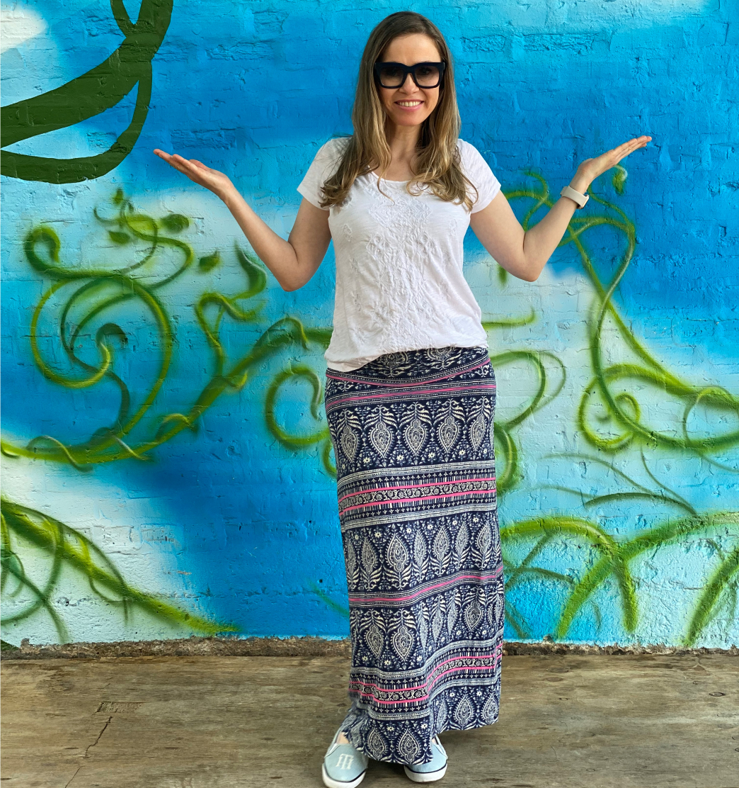
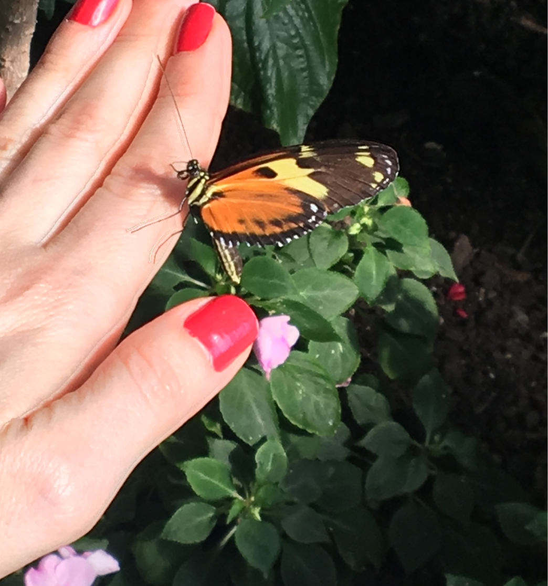

Hi again!
I’m Maira Prado.

Thank you for stopping by!
Hi again!
I’m Maira Prado.
Thank you for stopping by!
Who am I?
I’m a motivated and high energy UX/UI designer with a passion for helping people. When I discovered that I could help a myriad people through design, I was confident that I was finally on the right path.
I am extremely interested in people’s behaviors. For example, I remain curious about the psychology behind the decisions humans make. What draws them to their favorite brands? What keeps them interested in a website? What motivates them to buy certain products over a similar one? Why do they like certain colors? I am also interested in how colors can spark emotions within us and using it to improve usability.
I have always been creative and working on a new project. My greatest desire is to improve the way humans interact with technology by adding value and bringing new perspectives to the user experience. Therefore, I have honed my skills to facilitate strategy and collaboration in the work environment.
My design process involves the flexibility to adjust to feedback and make product iterations to improve the user experience.
Above all else, I will continue using design to make a difference in people’s lives. I strive to understand people both personally and professionally. In order to bring the projects to life, I aim to truly understand the user’s frustrations, goals, and needs.
Besides my passion for universal design, I love coffee, and my cute dog named Sophie (I have chosen this name because it has a beautiful meaning: wisdom).
A new chapter
I am comfortable in the face of adversity. Throughout my life, I have relied upon my resourcefulness and creativity to reinvent myself. Long before I knew the value of design, my career was in law in Brazil. Surprisingly the skills I developed when working with law are transferable to design. These include empathy, problem-solving, and research. But the most unexpected transferable skill is analytical thinking.
When I first learned of UX design I thought the focus would be in choosing colors and typefaces, but I sooner realized that it can be similar to the step by step process I used while working in law.
Regardless of the industry, I learned that when solving complex problems it is important to break it down into manageable components, the key factor in the user experience design process.
To help me develop the necessary skills to work in the UX area I enrolled in an immersive UX design apprenticeship at Bloc. I gained a firm understanding of the design process and utilize it to build several user-centered projects. I believe I am capable of utilizing my past experiences and study in the technology area to create functional and beautiful digital experiences.